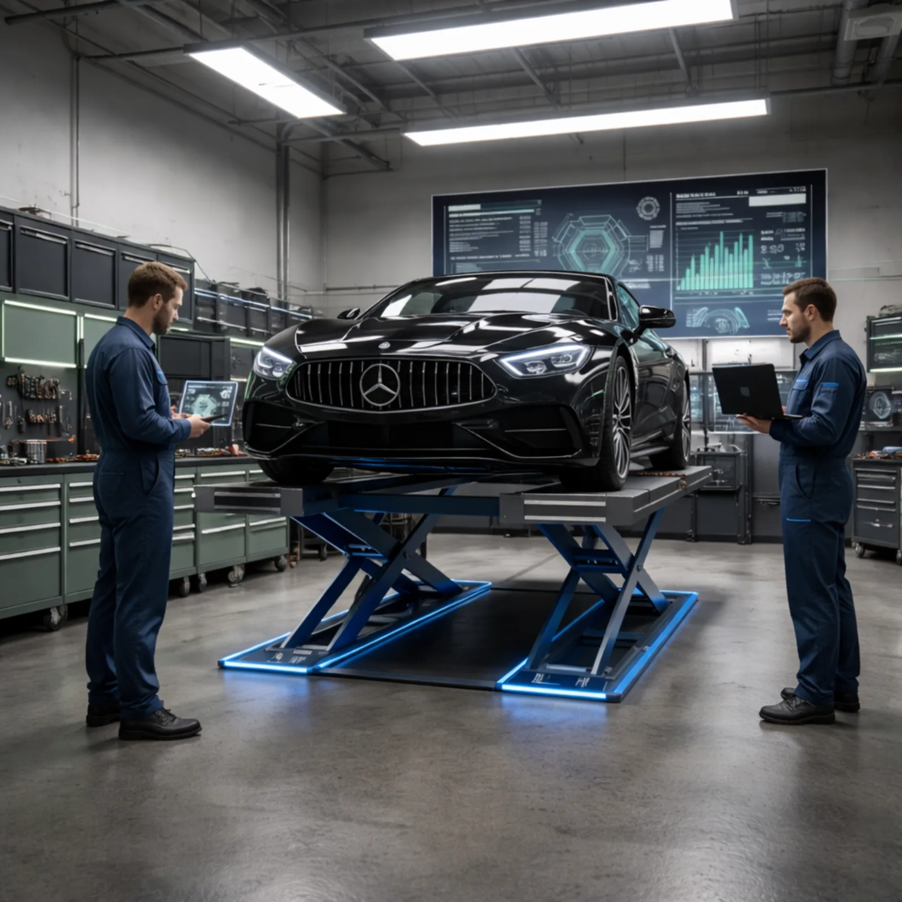
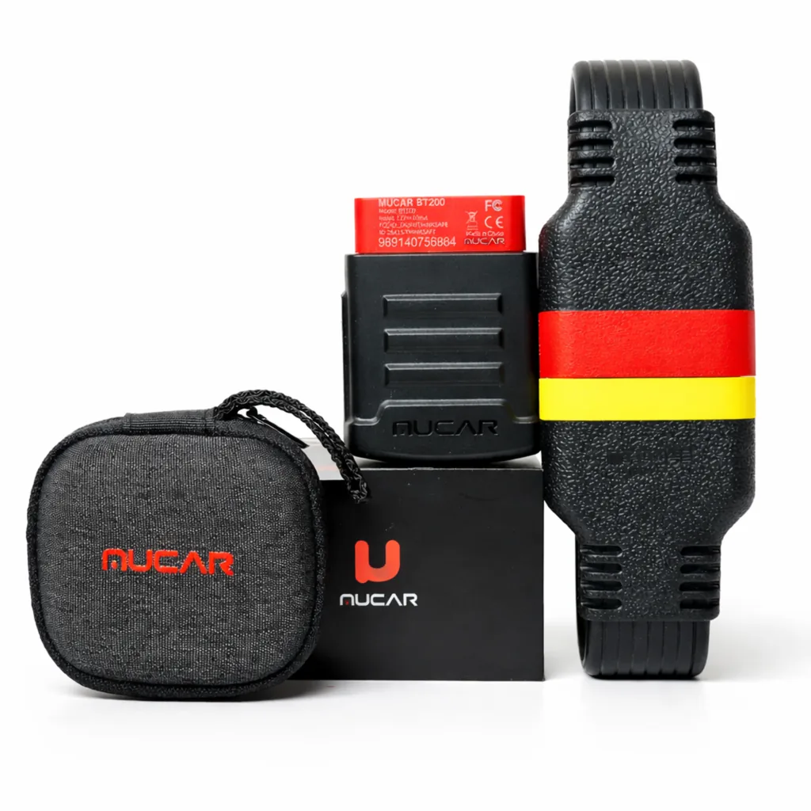
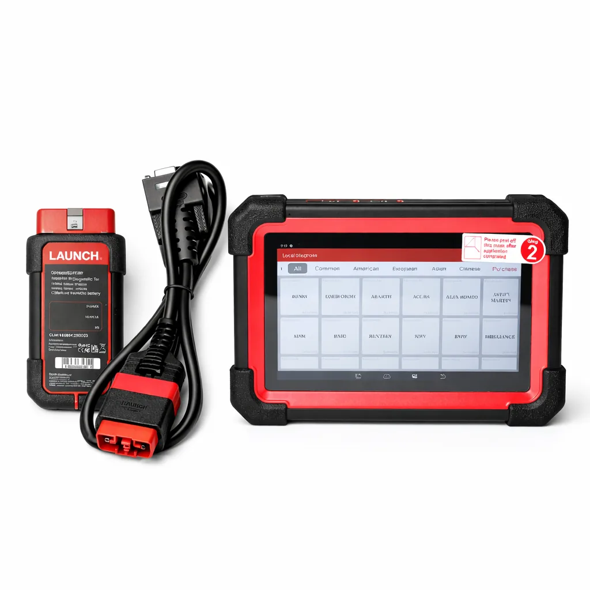
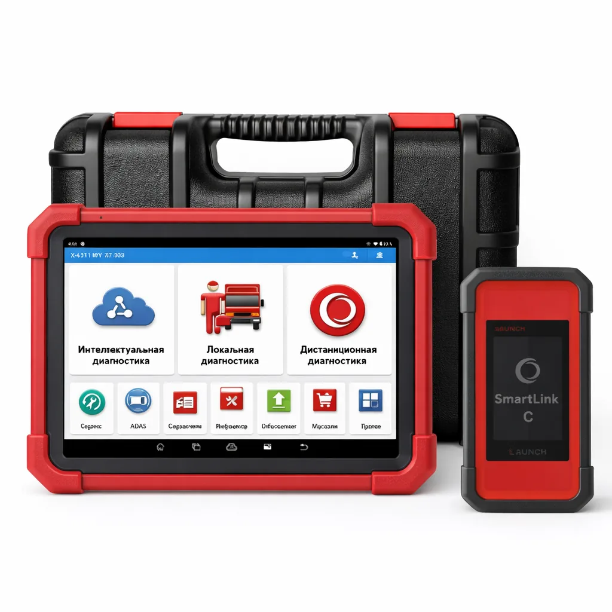

Оригинальные сканеры. Полный функционал. Поддержка и обучение.

Профессиональное оборудование для автомобильной диагностики

Диагностический сканер с поддержкой OBD2 и Bluetooth

Профессиональный диагностический сканер

Для легковых и грузовых автомобилей
Профессиональный подход к автомобильной диагностике
100% лицензионное программное обеспечение без блокировок и ограничений
Гарантированная работоспособность без внезапных блокировок устройств
Работа с автомобилями всех популярных марок и моделей
Возможность удалённого кодирования и программирования блоков управления
Оптимальное решение для автосервисов и специалистов по подбору автомобилей
Консультации, обучение и помощь в эксплуатации оборудования
Честные отзывы от тех, кто уже купил сканер или активировал лицензии.
«PAD 9 пришёл быстро, всё оригинал. По настройке подсказали, лицензии активировали без плясок. Респект.»
«Брал MUСAR для личной машины — диагностирует нормально, ошибки читает, живые параметры показывает. Для своей цены топ.»
«Продлили подписку быстро, без мутных схем. Всё объяснили по-человечески, поддержка на связи.»
Мы подготовили ответы на наиболее частые вопросы, чтобы сэкономить ваше время и упростить выбор.